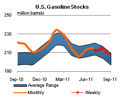

Released: August 31, 2011
Next Release: September 8, 2011
Gasoline Consumption: how did we get here?
With the upcoming Labor Day weekend marking the end of the peak driving season in the United States, it is a good time to review recent trends in U.S. gasoline consumption, which accounts for about 10 percent of total global oil demand. The U.S. Energy Information Administration (EIA) data indicate gasoline consumption in the first six months of 2011 was 2 percent lower than in the same period in 2010. Economic growth, gasoline prices, and vehicle fleet efficiency are three key determinants of gasoline use. Economic growth and prices impact vehicle miles traveled, while fleet efficiency, which changes only slowly based on efficiency of new vehicles relative to the efficiency of the existing fleet and the rate of fleet turnover, links miles traveled to fuel use. Higher gasoline prices in 2011 compared to the same period in 2010 appear to be the main driver behind the recent drop in gasoline demand. The impacts of increased economic activity and increased vehicle efficiency, which move gasoline demand in opposite directions, were each about half the size of the impact of higher prices, and taken together the two effects were largely offsetting.
In May 2011, when prices eclipsed $4 per gallon in some areas of the country for the first time since August 2008 (though the national average price topped out at $3.97 per gallon), questions regarding the robustness of U.S. gasoline demand moved to the foreground. After a significant decline in 2008 brought about by rising prices and economic recession, gasoline consumption stagnated. June 2009 marked the first time in 21 months that U.S. gasoline consumption posted growth relative to the year-earlier monthly level. Notwithstanding a soft patch in the first quarter of 2010, gasoline consumption averaged growth of about 35 thousand barrels per day (bbl/d), or 0.4 percent relative to the year-earlier monthly level from June 2009 through the end of 2010, with growth particularly strong in the third quarter of 2009.
As crude oil prices rose following their sharp decline from July to December 2008, so too did gasoline prices. Retail prices for U.S. regular-grade gasoline rose from a low of $1.61 per gallon at the end of December 2008 to $3.05 per gallon at the end of December 2010. By late 2010, U.S. gasoline demand growth had begun to weaken. November 2010 consumption showed a 90 thousand bbl/d decline relative to the year-earlier monthly level; since then, gasoline consumption has shown year-over-year declines in 7 of the last 8 months.
In early 2011, unrest in the Middle East and North Africa, particularly a near-total disruption in Libyan crude exports, caused crude oil prices to extend their gains of 2010. In addition , widespread refinery outages in the United States, both planned and unplanned, caused U.S. gasoline prices to rise even faster than crude prices, amplifying the typical seasonal increase in refiner gasoline margins across the country (margins reflect the difference between the gasoline wholesale price and the average cost of crude oil). By early May, those supply-side pressures had lifted average U.S. retail gasoline prices to $3.97 per gallon in EIA's weekly survey.
The sharp rise in gasoline prices since the end of 2010 appears to have taken a toll on U.S. gasoline consumption. From January through June, consumption averaged about 180 thousand bbl/d (2.0 percent) lower than the same period in 2010. Since then, gasoline prices retreated somewhat, falling 34 cents from their May 9 high of $3.97 per gallon to $3.63 per gallon as of August 29. Available weekly data for July and August indicate that gasoline consumption was about 150 thousand bbl/d (1.6 percent) lower than in the same period in 2010, suggesting continued weakness in domestic motor gasoline markets.
Looking into the role of the three key determinants of consumption
Gasoline consumption has fallen despite modest economic growth, driven by population, output, income, and employment expansion -- a combination that, under stable price conditions, would normally lead to increasing gasoline consumption. Real (inflation-adjusted) GDP for the first six months of 2011 is estimated to be 1.9 percent higher than for the same period in 2010. According to the EIA's Short-Term Energy Outlook (STEO) model, the short-term income elasticity for vehicle miles traveled is about 0.5 (meaning a 1-percent increase in income results in a 0.5-percent increase in miles traveled and gasoline consumption). This elasticity estimate implies motor gasoline consumption this year should have been 0.9 percent higher than the same period in 2010, assuming no year-over-year change in gasoline prices or the fuel efficiency of the vehicle fleet.
In its STEO model, EIA estimates the short-term elasticity of vehicle miles traveled with respect to the price of gasoline is about -0.07 (a 1-percent increase in prices leads to a 0.07 percent decline in highway travel). The average pump price of regular-grade gasoline during the first six months of 2011 was 28 percent higher than the same period last year. Motor gasoline consumption would therefore have been 2.0 percent lower than in 2010, assuming no year-over-year change in economic activity or improvement in the average efficiency of the vehicle fleet.
Taken together, the estimated net effect of income and price changes and their respective elasticity estimates during the first half of 2011 imply a 1.1-percent decline in gasoline consumption over the comparable year-ago period. However, the estimated average fuel efficiency of the in-use vehicle fleet rose by roughly 1.0 percent in the first half of 2011 compared to the comparable year-ago period based on a calculation made using total gasoline consumption reported by EIA and total highway miles travelled reported by the Federal Highway Administration. Therefore, the combined effect of the income, price, and fuel efficiency impacts as modeled by EIA would be a 2.1-percent decline in consumption, similar to the 2.0-percent year-over-year decline reported for January through June 2011.
Gasoline and diesel prices move higher
The U.S. average retail price of regular gasoline increased this week, adding almost a nickel to reach $3.63 per gallon. The average price is $0.95 per gallon higher than last year at this time. The largest increase came in the Midwest where prices were a dime higher than last week. Several unanticipated refinery outages in the region likely boosted the average there. The price on the West Coast gained almost six cents to $3.75 per gallon, the most expensive regional average in the country. The Gulf Coast, Rocky Mountains, and East Coast prices all moved up about a penny on the week.
The national average diesel price increased for the first time in five weeks, climbing a penny to $3.82 per gallon. The diesel price is $0.88 per gallon higher than last year at this time. The West Coast average price jumped more than five cents, the largest increase for the week. The Rocky Mountains followed, adding more than two cents to last week's price, while the Midwest average rose more than a cent. Moving in the other direction, both the Gulf Coast and East Coast regions experienced price declines of less than a penny.
Propane stocks continue seasonal build
Last week, total U.S. inventories of propane grew by 1.5 million barrels to end at 53.6 million barrels. Stocks are 8.9 million barrels below last year and below the average range for this time of year. Strong imports in the Midwest contributed to the largest regional gain, pushing the region's inventories up by 1.3 million barrels last week. The East Coast region grew by 0.2 million barrels, while the Rocky Mountain/West Coast region added 0.1 million barrels. The Gulf Coast regional inventories were down slightly. Propylene non-fuel use inventories represented 4.4 percent of total propane inventories.
Text from the previous editions of This Week In Petroleum is accessible through a link at the top right-hand corner of this page.
| Retail Data | Changes From | Retail Data | Changes From | ||||
| 08/29/11 | Week | Year | 08/29/11 | Week | Year | ||
| Gasoline | 3.627 | Diesel Fuel | 3.820 | ||||
|
|||||||||||||||||||||||||||
| *Note: Crude Oil Price in Dollars per Barrel. | |||||||||||||||||||||||||||
|  | |||||||
| Stocks Data | Changes From | Stocks Data | Changes From | ||||
| 08/26/11 | Week | Year | 08/26/11 | Week | Year | ||
| Crude Oil | 357.1 | Distillate | 156.1 | ||||
| Gasoline | 208.6 | Propane | 53.590 | ||||